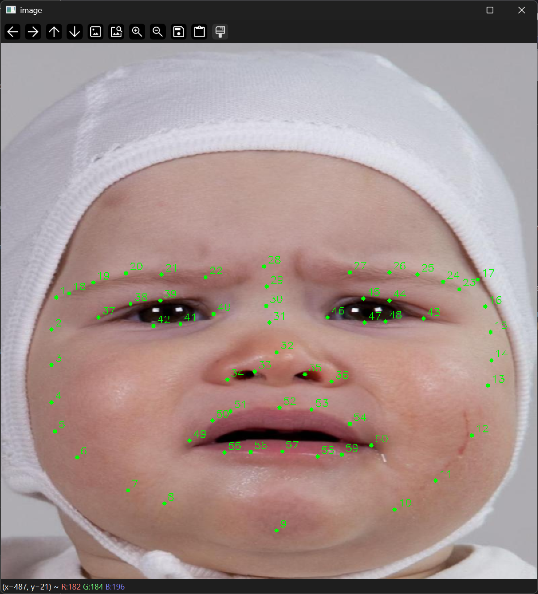
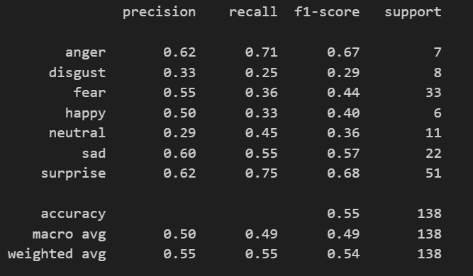
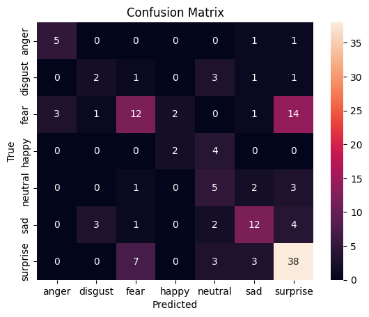
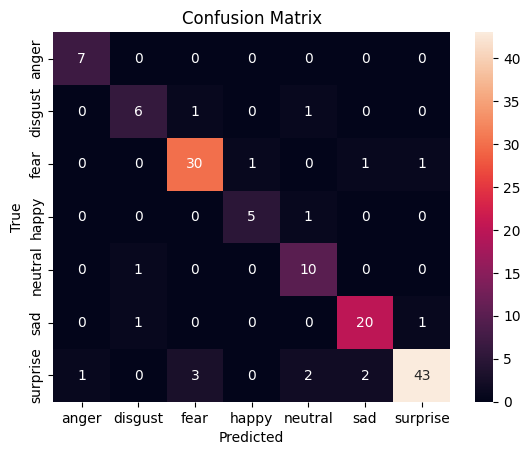
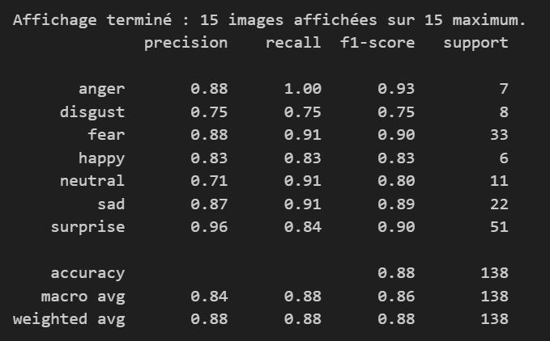
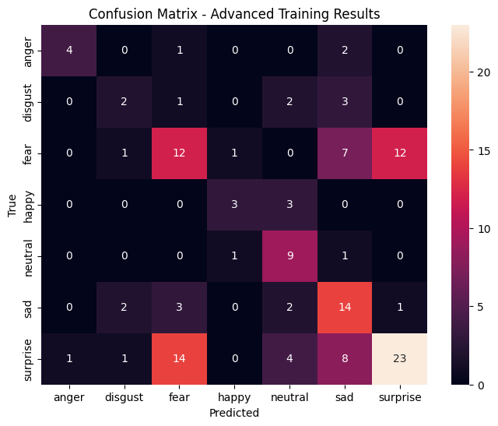

Project Overview
The iFACE project is part of the broader CUBE-SD program and aims to improve the automated analysis of infant facial expressions, with a particular focus on expressions related to surprise.
The project combines facial landmark detection, geometric feature extraction, and emotion classification in order to build a transparent and reproducible workflow for infant-face analysis. It is motivated by the need for tools that are better adapted to infant morphology than standard adult-oriented facial-expression systems.
A key focus of the project is the facial configuration associated with surprise, especially through changes involving the eyebrows, eyes, and mouth. The broader objective is not only to classify expressions, but also to better understand which parts of the face are most informative and where the current pipeline succeeds or fails.
Methods
The current workflow starts from an infant facial-expression image dataset and uses a sequence of processing steps designed to make classification more robust and more interpretable.
1. Dataset structure
The project uses infant facial-expression images categorized into emotional classes. In your current description, the working dataset includes 687 image files, derived from an initially smaller set through the inclusion of image variants.
The emotion labels visible in the confusion matrices are: anger, disgust, fear, happy, neutral, sad, and surprise.
2. Train / validation split
The current split is described as 80% training and 20% validation, corresponding to:
- Training: 552 images
- Validation: 138 images
3. Landmark detection
Facial landmarks are extracted from infant faces and used to represent facial geometry. These landmarks are then connected into a mesh-like structure, allowing the model to characterize spatial relations across facial regions.
4. Geometry and classification
The workflow appears to rely on geometric facial information derived from landmarks and triangulation, followed by a classification stage. The figures you provided suggest iterative refinement of this pipeline in order to reduce overfitting and improve generalization.
Facial regions of interest
The project is especially interested in expression-relevant regions such as the eyebrows, eyes, nose area, and mouth, because these regions are central for identifying facial changes associated with surprise.
Why landmarks matter
Landmark-based methods make the analysis more interpretable than a purely black-box approach: they help identify which facial deformations are being captured and whether the model is relying on plausible face geometry.
Why overfitting was examined
The intermediate results clearly suggest a gap between strong apparent performance in some settings and weaker generalization in others, which is why overfitting evaluation became a central part of the method-development process.
Current development logic
Rather than presenting one final frozen model, the material shows a progressive pipeline-improvement strategy: test, diagnose, refine triangulation or feature representation, and reassess classification.
Results and Pipeline Evolution
The figures below document the different stages of the current iFACE pipeline: facial landmarking, triangulation refinement, first classification results, overfitting analysis, and later updated results.
Facial landmarking and triangulation


First classification results


Overfitting assessment



Second-stage results after refinement


Main strength visible so far
Surprise appears repeatedly as a class the model can capture, including in qualitative examples and in multiple confusion matrices.
Main limitation visible so far
The results suggest persistent ambiguity between surprise and other visually related expressions, especially fear, and possibly sadness in later stages.
What the figures show
The workflow is not presented as finished. Instead, it shows an honest development process in which classification quality, interpretability, and generalization are being improved step by step.
Current reading of the pipeline
The project already demonstrates feasibility, but the classification problem remains challenging, which is exactly why this type of infant-specific tool is needed.
Team
The iFACE project is currently presented here as part of the broader research program led within the CUBE-SD framework.
Project leads and collaborators
Romain di Stasi
Development of the iFACE pipeline and integration within the broader CUBE-SD program.
Claire Kabdebon
Adélaïde de Heering
Contribute
We welcome contributions to the iFACE project. Contributions may include helping improve the codebase, sharing ideas for more robust infant-adapted facial analysis, discussing methodological issues, or supporting future development of the dataset and pipeline.
This project is especially relevant for people interested in infant development, emotion analysis, computer vision, reproducible research, and transparent model evaluation.
For more information on how to contribute, please contact me by email at romain.di-stasi@outlook.com.